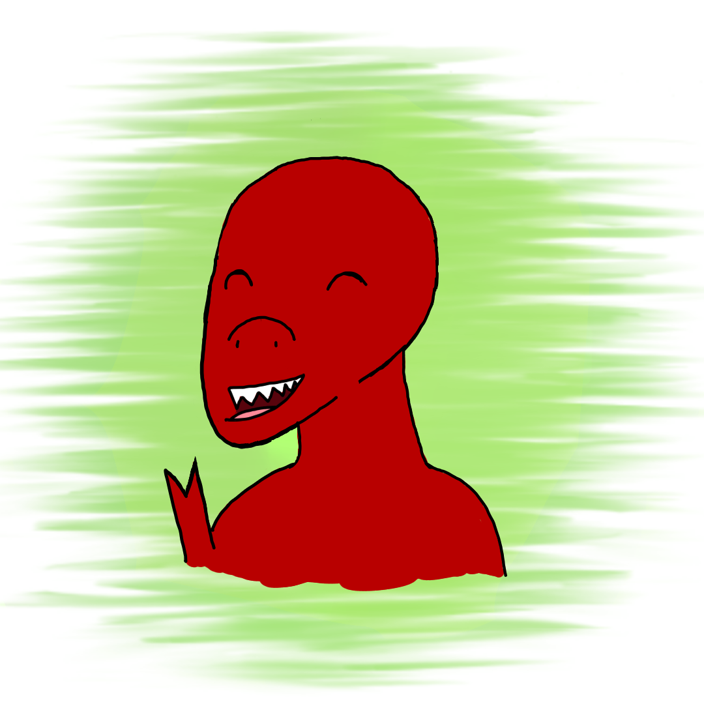

Rexy is a very social dinosaur. He loves making new friends with everyone he meets! He has a younger sister name Sue who he loves very much and is very protective of.
Birthday: August 12th
Rexy loves books, but has some trouble reading so he often listens to audiobooks instead.